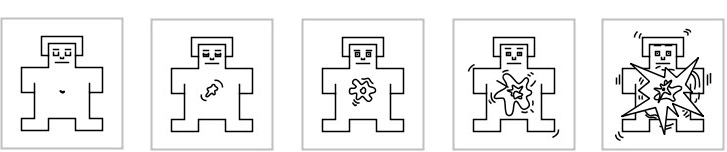
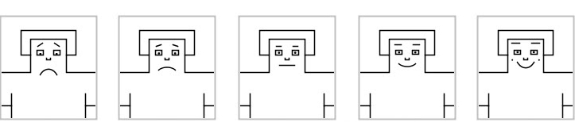
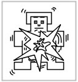
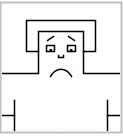

¡Le damos la bienvenida a este estudio, gracias por su participación!
El estudio consiste en escuchar una serie de fragmentos musicales mientras se registra la actividad psicofisiológica asociada. Al finalizar cada fragmento, le pediremos que lo evalúe del modo que explicaremos a continuación. Si tiene alguna duda o problema avise a la persona encargada.
En estos paneles, usted informará sobre el grado de activación o relajación que ha experimentado al escuchar cada fragmento.
La primera imagen de la izquierda muestra a una persona muy tranquila, casi aletargada.
Refleja estados como la relajación, la tranquilidad, la ociosidad, la meditación, el aburrimiento o la pereza.
La última imagen de la derecha muestra a una persona que está rebosante de excitación.
Refleja estados como alegría, excitación, la euforia, la rabia, la agitación o la ira.
Las imágenes restantes representan estados intermedios.

En estos paneles, usted informará del grado en que ha experimentado emociones negativas o positivas tras escuchar cada
La primera imagen de la izquierda muestra a una persona claramente angustiada.
Refleja estados como el pánico, irritación, asco, desesperación, tristeza, pesimismo, o sentimientos de derrota.
La última imagen de la derecha muestra a una persona evidentemente eufórica.
Refleja estados como la alegría, diversión, deleite, felicidad, relajación, satisfacción o reposo.

Antes de comenzar con el experimento, hagamos un rápido repaso para refrescar lo que significan las imágenes de evaluación.

Esta imagen se refiere a:
Las imágenes con una mancha grande representan a un individuo que experimenta una alta activación y los estados relacionados.
Antes de comenzar con el experimento, hagamos un rápido repaso para refrescar lo que significan las imágenes de evaluación.

Esta imagen se refiere a:
Las imágenes con una cara triste representan a un individuo que experimenta sentimientos emocionales negativos y sus estados relacionados.
Ahora presentaremos una cruz negra en el centro de la pantalla durante 2 minutos. Por favor, mantenga la vista fijada en la cruz tratando de permanecer lo más inmóvil posible y mantener la mente despejada, no pensando de forma recurrente en nada en particular.
+
Ahora va a escuchar una serie de fragmentos musicales de 30 segundos de duración, reproducidos desde diferentes posiciones. Tras cada fragmento, se le pedirá que califique su reacción emocional utilizando los maniquíes tal como se ha explicado previamente.
Antes de cada fragmento habrá cinco segundos de descanso. La duración total del estudio será de aproximadamente 45 minutos. Por favor, intente moverse lo menos posible y mantener la concentración a lo largo de la sesión.
Por favor mantén la cabeza recta.
Indique su nivel de activación mientras escuchaba el fragmento musical:
Indique en qué medida ha experimentado emociones negativas o positivas mientras escuchaba el fragmento musical:
¿Cómo de cansado/a se encuentra en este momento?
¿Qué capacidad de concentración siente que tiene en este momento?
Ya has pasado % 👍
El experimento ha concluido. ¡Muchas gracias por participar!